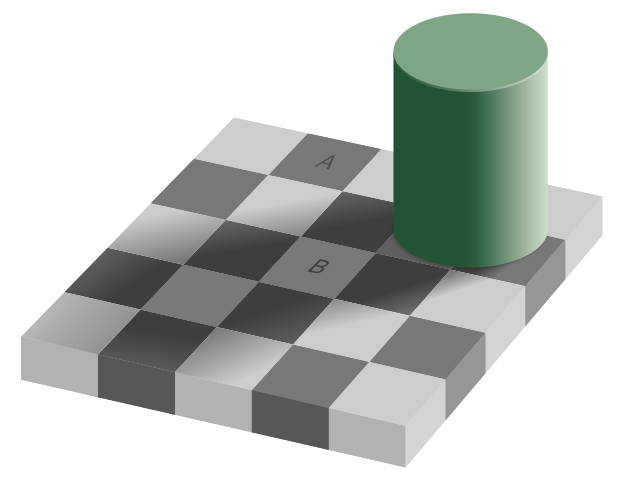
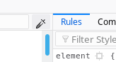

Years ago I used to occasionally read a site called "Clients from hell" basically a page where people (generally freelance graphic designers) could post funny stories about horrible clients and misunderstandings.
Generally, the stories went along the lines of:
Client: I want you to do X work for me.
Freelance graphic designer: Sure that will cost Y dollars.
Client: Oh, I didn't think I'd have to pay you for that, it's just pictures and stuff.
or the ever popular misunderstandings of how technology works
Freelance web designer: I've updated the site with the changes you wanted.
Client: Really? Because the paper copy I printed out last week hasn't changed.
However there was one story that came up over and over that always annoyed me, it runs along the lines of;
Client: Can you make X thing brighter?
Freelance graphic designer: No, it's #FFFFFF, it's impossible, it is as bright as it can be.
Client: Please, just a little brighter would make it look better.
Freelance graphic designer: changes nothing ... Sure there you go, it's brighter now.
Client: Ok, thanks.
Freelance graphic designer: Posts on Clients from Hell about how dumb the client is.*
The thing is, it's not the client that's at fault there, it's the designer.
I'm sure many people would have seen the checker shadow illusion before.

for those of you that haven't, the squares A and B are the same colour. This can be verified by using your favourite image editing tool or even with Firefox press F12, select the eyedropper tool and you will see they are both #787877

When the client is saying "Make it brighter" what they probably mean is "Make it appear brighter" and as a graphic designer, it's their job to explain that maybe we can make the background darker and that will make the foreground look brighter.
It's the same in IT security, our job as professionals to interpret what the client is asking for. When a client asks for "A website that's impossible to hack" as a security professional, you can't guarantee there will never be any 0 day in Apache or Nginx or whatever you use. But you can explain to the client that maybe what they are really looking for is a static website hosted on GitHub or whatever is appropriate for their situation.